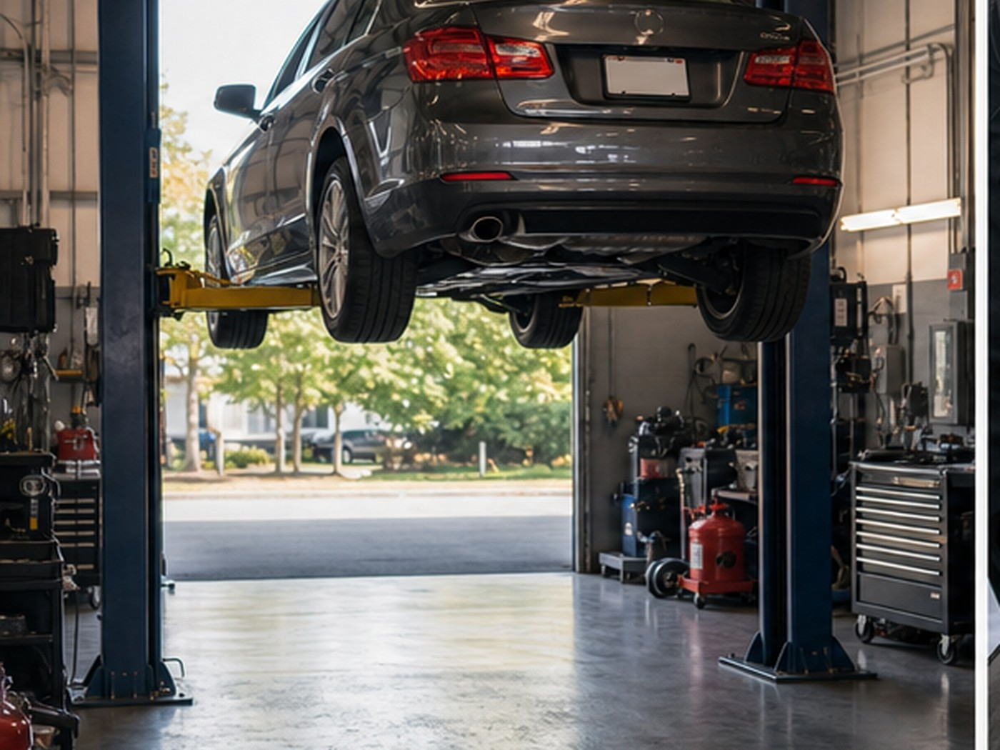
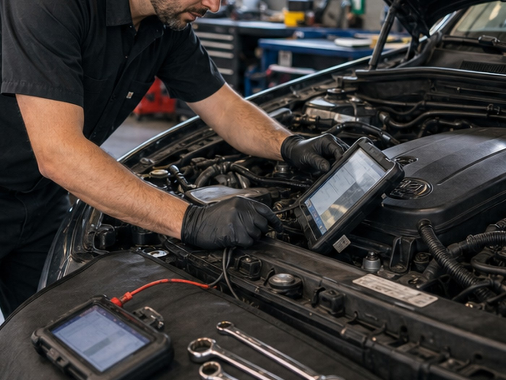
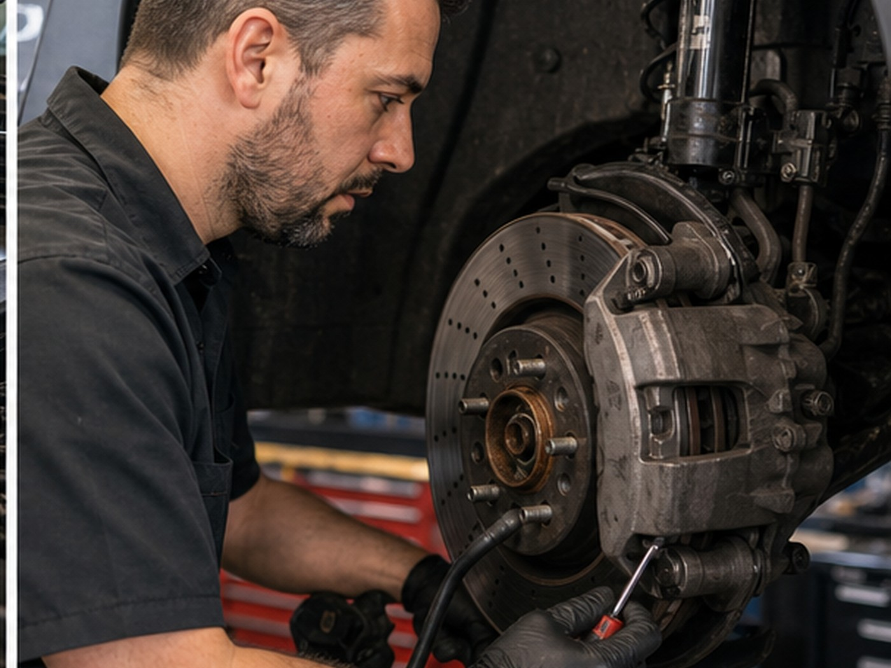

Liberty Drive auto clinic
Auto repair information Easley drivers can act on quickly.
Diagnostics, brake checks, oil service, AC checks, engine repair, and maintenance from a Liberty Drive auto shop.
- 4.571 Google reviews
- Auto RepairEasley, SC
- FastTap-to-call scheduling

Services
Clear options for local customers.
- Diagnostics
- Brake checks
- Oil service
- AC checks
- Engine repair
- Maintenance

Local service
Repair support without extra friction.
Easley Auto Clinic helps customers understand the starting point for service and call the shop with the right repair concern.

Service path
Select the service starting point.
A warning light visit should capture the vehicle, symptom, and diagnostic request before the customer arrives.
Local proof
Built around the trust customers already look for.
- 4.5-star Google rating
- 71 public reviews
- Liberty Drive location
Contact
Easley Auto Clinic
915 Liberty Dr, Easley, SC